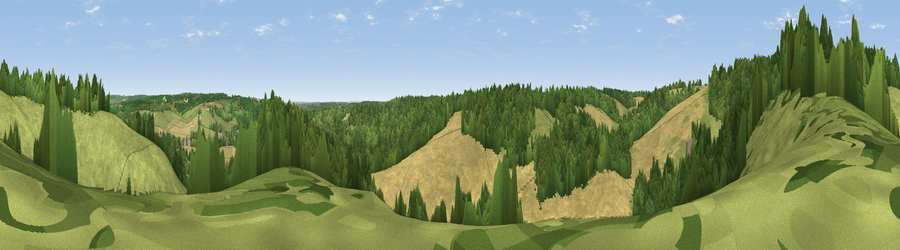

Viewpoint near Streatley
#39572 in England · top 57% of its area beats it · near StreatleyWhere it is
The exact computed spot (SU 59025 79725). Click the marker for map links.
The view, rendered

A 360° render of this exact spot computed from the terrain model, tree cover and land cover — summer colours, afternoon light, calibrated against photographs of famous viewpoints. Real trees, hedges and buildings will differ in detail.
The panorama
Grey silhouette: terrain skyline in each direction (720 bearings, Earth curvature and refraction included). Dashed green: skyline with trees (+15 m) and buildings (+8 m) as obstacles. Blue strip: how far the ground is visible on each bearing.
Where the view opens
Wedge length = distance to the farthest visible ground on that bearing (vegetation-aware). Rings at 10, 25 and 50 km.
What fills the view
36% woodland · 32% grassland · 31% cropland ·
Angular shares of the visible panorama (visual magnitude), not map area. Landscape diversity 0.49 (0–1 Shannon).
Key numbers
More beautiful places nearby
The staircase of upgrades: each row has a higher view potential than everything closer. Driving times are estimates from straight-line distance, calibrated against real road routing — check an actual route before setting out.
| Place | Direction | Drive | Score |
|---|---|---|---|
| Viewpoint near Goring-on-Thames | ESE · 1 km | ~2 min | 32.2 |
| Viewpoint near Streatley | N · 1 km | ~4 min | 57.2 |
| Viewpoint near Moulsford | NNW · 3 km | ~8 min | 58.8 |
| Viewpoint near Compton | WNW · 6 km | ~12 min | 64.1 |
| Castle Hill | N · 13 km | ~24 min | 68.3 |
| Round Hill | N · 13 km | ~24 min | 70.1 |
| Viewpoint near Watlington | NE · 18 km | ~31 min | 70.6 |
| Viewpoint near Lewknor | NE · 20 km | ~34 min | 70.8 |
51.51338, -1.15081 · source: screening · position refined by local search. Computed location — check access rights before visiting.